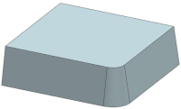
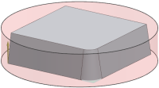

创建工序
-
打开 mnf18_floor_wall_milling_w_ipw_1。

-
点击插入工具条上的创建工序
 。
。 -
在创建工序对话框中，将类型设置为 mill_planar。
-
在工序子类型组中，点击带 IPW 的底面和壁 。
-
在位置组中，设置如下参数：
-
程序 = PROGRAM
-
刀具 = MILL (铣刀—5 参数)
-
几何体 = WORKPIECE
-
方法 = MILL_ROUGH
-
-
点击确定。

将打开底面壁 IPW 对话框。